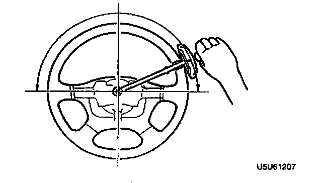

With Power Steering
STEERING WHEEL EFFORT INSPECTION1. Check the following points:
1) Tire size and tire pressure
2) Fluid level
3) Drive belt deflection
2. With the vehicle on a hard, level surface, put the wheels in the straight-ahead position.
3. Start the engine and warm the power steering fluid to 50-60°C (122-140°F).
4. Remove the air bag module.

5. Measure the steering wheel effort by using a torque wrench.
Steering wheel effort 7.8 Nm (80 kg-cm, 69 inch lbs.) maximum
Note:
- To determine whether the steering effort is satisfactory or not, perform the inspection on another vehicle of the same model and under the same conditions, and compare the results.
- The steering wheel effort varies with conditions as shown below.
1. Road conditions, such as dry or wet, and asphalt or concrete.
2. Tire conditions, such as brand, wear, and tire pressure.
6. If not as specified, note the following:
1) Air in system
2) Fluid leakage at hose or connectors
3) Function of oil pump and steering gear